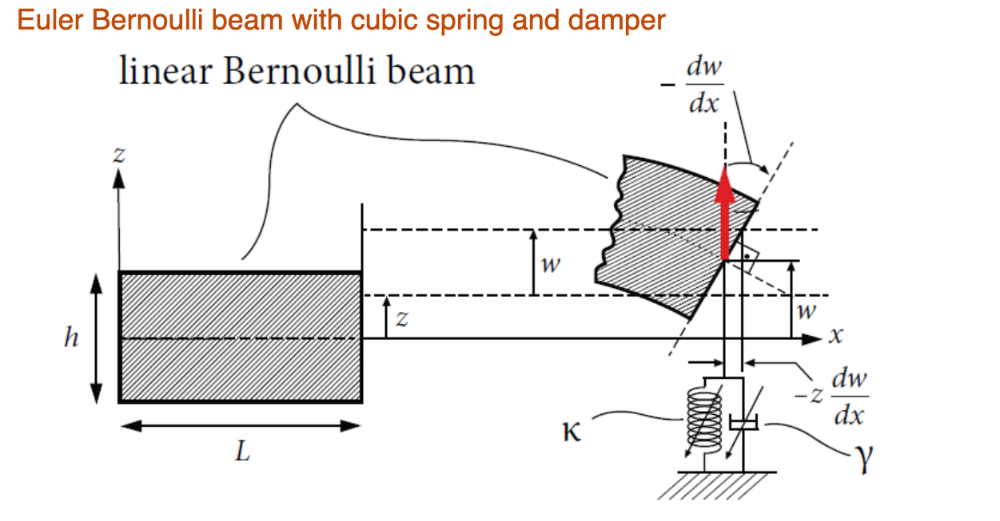
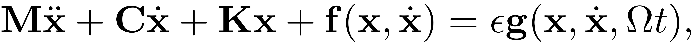
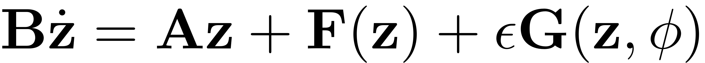
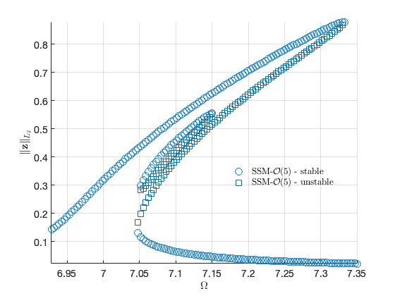
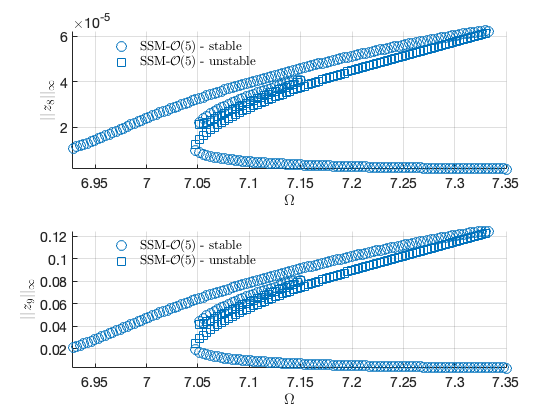
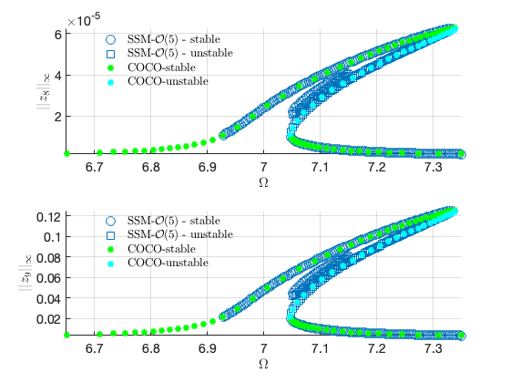
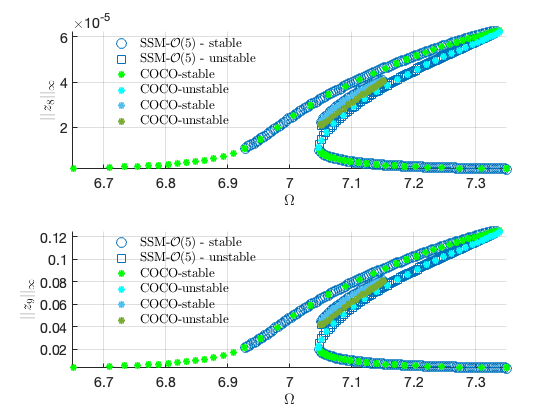
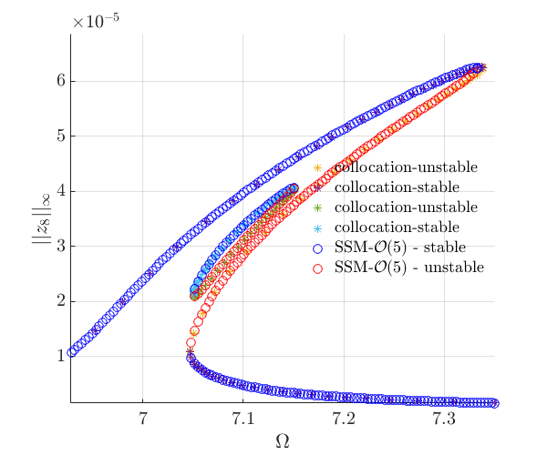
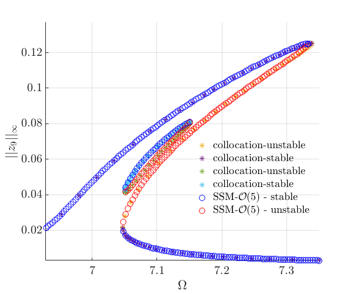

<!DOCTYPE html
  PUBLIC "-//W3C//DTD HTML 4.01 Transitional//EN">

<html><html><body><div class="banner"><a href="../../../../index.html"></a></div></body></html><head>
<meta content="text/html; charset=utf-8" http-equiv="Content-Type"/>
<!--
This HTML was auto-generated from MATLAB code.
To make changes, update the MATLAB code and republish this document.
      --><title>Euler Bernoulli beam with cubic spring and damper</title><meta content="MATLAB 9.14" name="generator"/><link href="http://purl.org/dc/elements/1.1/" rel="schema.DC"/><meta content="2023-09-01" name="DC.date"/><meta content="BernoulliBeam_External.m" name="DC.source"/><style type="text/css">
html,body,div,span,applet,object,iframe,h1,h2,h3,h4,h5,h6,p,blockquote,pre,a,abbr,acronym,address,big,cite,code,del,dfn,em,font,img,ins,kbd,q,s,samp,small,strike,strong,tt,var,b,u,i,center,dl,dt,dd,ol,ul,li,fieldset,form,label,legend,table,caption,tbody,tfoot,thead,tr,th,td{margin:0;padding:0;border:0;outline:0;font-size:100%;vertical-align:baseline;background:transparent}body{line-height:1}ol,ul{list-style:none}blockquote,q{quotes:none}blockquote:before,blockquote:after,q:before,q:after{content:'';content:none}:focus{outine:0}ins{text-decoration:none}del{text-decoration:line-through}table{border-collapse:collapse;border-spacing:0}

html { min-height:100%; margin-bottom:1px; }
html body { height:100%; margin:0px; font-family:Arial, Helvetica, sans-serif; font-size:10px; color:#000; line-height:140%; background:#fff none; overflow-y:scroll; }
html body td { vertical-align:top; text-align:left; }

h1 { padding:0px; margin:0px 0px 25px; font-family:Arial, Helvetica, sans-serif; font-size:1.5em; color:#d55000; line-height:100%; font-weight:normal; }
h2 { padding:0px; margin:0px 0px 8px; font-family:Arial, Helvetica, sans-serif; font-size:1.2em; color:#000; font-weight:bold; line-height:140%; border-bottom:1px solid #d6d4d4; display:block; }
h3 { padding:0px; margin:0px 0px 5px; font-family:Arial, Helvetica, sans-serif; font-size:1.1em; color:#000; font-weight:bold; line-height:140%; }

a { color:#005fce; text-decoration:none; }
a:hover { color:#005fce; text-decoration:underline; }
a:visited { color:#004aa0; text-decoration:none; }

p { padding:0px; margin:0px 0px 20px; }
img { padding:0px; margin:0px 0px 20px; border:none; }
p img, pre img, tt img, li img, h1 img, h2 img { margin-bottom:0px; }

ul { padding:0px; margin:0px 0px 20px 23px; list-style:square; }
ul li { padding:0px; margin:0px 0px 7px 0px; }
ul li ul { padding:5px 0px 0px; margin:0px 0px 7px 23px; }
ul li ol li { list-style:decimal; }
ol { padding:0px; margin:0px 0px 20px 0px; list-style:decimal; }
ol li { padding:0px; margin:0px 0px 7px 23px; list-style-type:decimal; }
ol li ol { padding:5px 0px 0px; margin:0px 0px 7px 0px; }
ol li ol li { list-style-type:lower-alpha; }
ol li ul { padding-top:7px; }
ol li ul li { list-style:square; }

.content { font-size:1.2em; line-height:140%; padding: 20px; }

pre, code { font-size:12px; }
tt { font-size: 1.2em; }
pre { margin:0px 0px 20px; }
pre.codeinput { padding:10px; border:1px solid #d3d3d3; background:#f7f7f7; }
pre.codeoutput { padding:10px 11px; margin:0px 0px 20px; color:#4c4c4c; }
pre.error { color:red; }

@media print { pre.codeinput, pre.codeoutput { word-wrap:break-word; width:100%; } }

span.keyword { color:#0000FF }
span.comment { color:#228B22 }
span.string { color:#A020F0 }
span.untermstring { color:#B20000 }
span.syscmd { color:#B28C00 }
span.typesection { color:#A0522D }

.footer { width:auto; padding:10px 0px; margin:25px 0px 0px; border-top:1px dotted #878787; font-size:0.8em; line-height:140%; font-style:italic; color:#878787; text-align:left; float:none; }
.footer p { margin:0px; }
.footer a { color:#878787; }
.footer a:hover { color:#878787; text-decoration:underline; }
.footer a:visited { color:#878787; }

table th { padding:7px 5px; text-align:left; vertical-align:middle; border: 1px solid #d6d4d4; font-weight:bold; }
table td { padding:7px 5px; text-align:left; vertical-align:top; border:1px solid #d6d4d4; }


  </style></head><body><div class="content"><h1>Euler Bernoulli beam with cubic spring and damper</h1><!--introduction--><!--/introduction--><h2>Contents</h2><div><ul><li><a href="#2">Generate model</a></li><li><a href="#3">Dynamical system setup</a></li><li><a href="#5">Linear Modal Analysis</a></li><li><a href="#6">Forced response curves using SSMs</a></li><li><a href="#10">Verification: Collocation using <a href="https://sourceforge.net/p/cocotools/wiki/Home/">coco</a></a></li><li><a href="#11">Verification of Isola</a></li></ul></div><p>Additionally to external excitation on the last node parametric excitation is applied as well. The tip of the beam is subject to linear parametric excitation. The experiment this example is based on can be found in</p>
<p>Chen, C. C. &amp; Yeh, M. K.:  <i>Parametric instability of a beam under electromagnetic excitation</i>. Journal of Sound and Vibration 240,747–764, <a href="https://doi.org/10.1006/jsvi.2000.3255">https://doi.org/10.1006/jsvi.2000.3255</a>;
A schematic depiction of the model is given by </p>
 <h2 id="2">Generate model</h2><pre class="codeinput">clear <span class="string">all</span>
nElements = 5;
kappa = 50; <span class="comment">% cubic spring</span>
gamma = 0.01; <span class="comment">% cubic damping</span>
mu = 45;
[M,C,K,fnl,fext] = build_model_external(kappa, gamma, nElements,mu);

n = length(M);
</pre><h2 id="3">Dynamical system setup</h2><p>We consider the parametrically excited system</p><p></p><p>which can be written in the first-order form as</p><p></p><p></p><p>where</p><p></p><pre class="codeinput">DS = <a href="../../../../Library/DynamicalSystem/DynamicalSystem.html">DynamicalSystem</a>();
set(DS,<span class="string">'M'</span>,M,<span class="string">'C'</span>,C,<span class="string">'K'</span>,K,<span class="string">'fnl'</span>,fnl);
set(DS.<a href="../../../../Library/Features/Options/Options.html">Options</a>,<span class="string">'Emax'</span>,5,<span class="string">'Nmax'</span>,10,<span class="string">'notation'</span>,<span class="string">'multiindex'</span>)
</pre><pre class="codeinput">epsilon = 0.002;;
DS.<a href="../../../../Library/DynamicalSystem/add_forcing.html">add_forcing</a>(fext,epsilon);
</pre><h2 id="5">Linear Modal Analysis</h2><pre class="codeinput"><span class="comment">% Analyse spectrum</span>
[V,D,W_evec] = DS.<a href="../../../../Library/DynamicalSystem/linear_spectral_analysis.html">linear_spectral_analysis</a>();

<span class="comment">% Choose Master subspace (perform resonance analysis)</span>

<span class="comment">% Set up SSM object</span>
S = <a href="../../../../Library/SSM/SSM.html">SSM</a>(DS);
set(S.<a href="../../../../Library/Features/Options/Options.html">Options</a>, <span class="string">'reltol'</span>, 0.3,<span class="string">'notation'</span>,<span class="string">'multiindex'</span>)

<span class="comment">%Choose Master subspace</span>
resModes = [1,2];
S.<a href="../../../../Library/Manifold/choose_E.html">choose_E</a>(resModes);
</pre><pre class="codeoutput">Due to high-dimensionality, we compute only the first 5 eigenvalues with the smallest magnitude. These would also be used to compute the spectral quotients
Assuming a proportional damping hypthesis with symmetric matrices
modal damping ratio for 1 mode is 8.840017e-04
modal damping ratio for 2 mode is 5.488086e-03
modal damping ratio for 3 mode is 1.541080e-02
modal damping ratio for 4 mode is 3.044305e-02
modal damping ratio for 5 mode is 5.052761e-02

 The first 10 nonzero eigenvalues are given as 
   1.0e+02 *

  -0.0001 + 0.0700i
  -0.0001 - 0.0700i
  -0.0024 + 0.4389i
  -0.0024 - 0.4389i
  -0.0190 + 1.2327i
  -0.0190 - 1.2327i
  -0.0741 + 2.4343i
  -0.0741 - 2.4343i
  -0.2042 + 4.0370i
  -0.2042 - 4.0370i

(near) outer resonance detected for the following combination of master eigenvalues
     6     0
     7     1
     8     2
     0     6
     1     7
     2     8

These are in resonance with the follwing eigenvalues of the slave subspace
  -0.2409 +43.8926i
  -0.2409 +43.8926i
  -0.2409 +43.8926i
  -0.2409 -43.8926i
  -0.2409 -43.8926i
  -0.2409 -43.8926i

sigma_out = 3300
(near) inner resonance detected for the following combination of master eigenvalues
     2     1
     3     2
     4     3
     5     4
     1     2
     2     3
     3     4
     4     5

These are in resonance with the follwing eigenvalues of the master subspace
  -0.0062 + 7.0006i
  -0.0062 + 7.0006i
  -0.0062 + 7.0006i
  -0.0062 + 7.0006i
  -0.0062 - 7.0006i
  -0.0062 - 7.0006i
  -0.0062 - 7.0006i
  -0.0062 - 7.0006i

sigma_in = 3300
</pre><h2 id="6">Forced response curves using SSMs</h2><p>Obtaining <b>forced response curve</b> in reduced-polar coordinate</p><pre class="codeinput">order = 5; <span class="comment">% SSM approximation order</span>
outdof = [n-2 n-1]; <span class="comment">% degree of freedom at which output is displayed</span>
</pre><p>setup options</p><pre class="codeinput">set(S.<a href="../../../../Library/Features/Options/Options.html">Options</a>, <span class="string">'reltol'</span>, 1,<span class="string">'IRtol'</span>,0.02,<span class="string">'notation'</span>, <span class="string">'multiindex'</span>,<span class="string">'contribNonAuto'</span>,true)
set(S.<a href="../../../../Library/Features/Options/Options.html">FRCOptions</a>, <span class="string">'nt'</span>, 2^7, <span class="string">'nRho'</span>, 200, <span class="string">'nPar'</span>, 200, <span class="string">'nPsi'</span>, 100, <span class="string">'rhoScale'</span>, 2 )
set(S.<a href="../../../../Library/Features/Options/Options.html">FRCOptions</a>, <span class="string">'method'</span>,<span class="string">'level set'</span>)
set(S.<a href="../../../../Library/Features/Options/Options.html">FRCOptions</a>, <span class="string">'outdof'</span>,outdof)
</pre><p>choose frequency range</p><pre class="codeinput">omega0 = imag(S.E.spectrum(1));
OmegaRange = omega0*[0.95 1.05];
</pre><p>Extract forced response curve</p><pre class="codeinput">startFRCSSM = tic;
FRC_SSM = S.<a href="../../../../Library/Features/Wrappers/cocoWrapper/extract_FRC.html">extract_FRC</a>(<span class="string">'freq'</span>,OmegaRange,order);
timings.FRCSSM = toc(startFRCSSM)
</pre><pre class="codeoutput">*****************************************
Calculating FRC using SSM with master subspace: [1  2]
(near) outer resonance detected for the following combination of master eigenvalues
     6     0
     7     0
     7     1
     8     1
     8     2
     0     6
     0     7
     1     7
     1     8
     2     8

These are in resonance with the follwing eigenvalues of the slave subspace
  -0.2409 +43.8926i
  -0.2409 +43.8926i
  -0.2409 +43.8926i
  -0.2409 +43.8926i
  -0.2409 +43.8926i
  -0.2409 -43.8926i
  -0.2409 -43.8926i
  -0.2409 -43.8926i
  -0.2409 -43.8926i
  -0.2409 -43.8926i

sigma_out = 3300
(near) inner resonance detected for the following combination of master eigenvalues
     2     1
     3     2
     4     3
     5     4
     1     2
     2     3
     3     4
     4     5

These are in resonance with the follwing eigenvalues of the master subspace
  -0.0062 + 7.0006i
  -0.0062 + 7.0006i
  -0.0062 + 7.0006i
  -0.0062 + 7.0006i
  -0.0062 - 7.0006i
  -0.0062 - 7.0006i
  -0.0062 - 7.0006i
  -0.0062 - 7.0006i

sigma_in = 3300
Due to (near) outer resonance, the exisitence of the manifold is questionable and the underlying computation may suffer.
Attempting manifold computation
Manifold computation time at order 2 = 00:00:00
Estimated memory usage at order  2 = 1.62E-02 MB
Manifold computation time at order 3 = 00:00:00
Estimated memory usage at order  3 = 2.19E-02 MB
Manifold computation time at order 4 = 00:00:00
Estimated memory usage at order  4 = 3.17E-02 MB
Manifold computation time at order 5 = 00:00:00
Estimated memory usage at order  5 = 4.43E-02 MB
gamma = 
   1.0e+05 *

  -0.0005 + 0.0074i
  -0.0286 - 1.2825i

Total time spent on FRC computation upto O(5) = 00:00:12

timings = 

  struct with fields:

    FRCSSM: 13.9056

</pre>  <h2 id="10">Verification: Collocation using <a href="https://sourceforge.net/p/cocotools/wiki/Home/">coco</a></h2><p>Dankowicz, H., &amp; Schilder, F. (2013).  <i>Recipes for Continuation,</i> SIAM Philadelphia. <a href="https://doi.org/10.1137/1.9781611972573">https://doi.org/10.1137/1.9781611972573</a></p><pre class="codeinput">nCycles = 10;

coco = <a href="../../../../Library/Features/Wrappers/cocoWrapper/cocoWrapper.html">cocoWrapper</a>(DS, nCycles, outdof);
set(coco,<span class="string">'initialGuess'</span>,<span class="string">'linear'</span>)
set(coco.<a href="../../../../Library/Features/Options/Options.html">Options</a>, <span class="string">'NAdapt'</span>, 1);
set(coco.<a href="../../../../Library/Features/Options/Options.html">Options</a>,<span class="string">'NTST'</span>, 20,<span class="string">'PtMX'</span>,200);

startcoco = tic;
bd = coco.<a href="../../../../Library/Features/Wrappers/cocoWrapper/extract_FRC.html">extract_FRC</a>(OmegaRange);
timings.cocoFRC = toc(startcoco)
</pre><pre class="codeoutput">
 Run='FRC0.002': Continue primary family of periodic orbits.

    STEP   DAMPING               NORMS              COMPUTATION TIMES
  IT SIT     GAMMA     ||d||     ||f||     ||U||   F(x)  DF(x)  SOLVE
   0                          4.78e-03  9.50e+00    0.0    0.0    0.0
   1   1  1.00e+00  1.88e-02  7.95e-07  9.50e+00    0.0    0.1    0.0
   2   1  1.00e+00  4.21e-06  3.36e-13  9.50e+00    0.0    0.1    0.0
   3   1  1.00e+00  1.68e-13  1.58e-13  9.50e+00    0.0    0.2    0.0

 STEP      TIME        ||U||  LABEL  TYPE         omega    po.period          eps         amp8         amp9
    0  00:00:00   9.5028e+00      1  EP      6.6506e+00   9.4476e-01   2.0000e-03   1.9201e-06   3.7842e-03
   10  00:00:08   9.8063e+00      2          6.8627e+00   9.1555e-01   2.0000e-03   5.3478e-06   1.0577e-02
   20  00:00:14   1.0851e+01      3          7.0895e+00   8.8626e-01   2.0000e-03   3.8253e-05   7.6031e-02
   30  00:00:20   1.2245e+01      4          7.2575e+00   8.6575e-01   2.0000e-03   5.6644e-05   1.1310e-01
   40  00:00:27   1.2671e+01      5          7.3329e+00   8.5685e-01   2.0000e-03   6.2462e-05   1.2496e-01
   44  00:00:32   1.2692e+01      6  FP      7.3389e+00   8.5614e-01   2.0000e-03   6.2451e-05   1.2500e-01
   44  00:00:32   1.2692e+01      7  SN      7.3389e+00   8.5614e-01   2.0000e-03   6.2451e-05   1.2500e-01
   50  00:00:36   1.2509e+01      8          7.3180e+00   8.5859e-01   2.0000e-03   5.9473e-05   1.1897e-01
   60  00:00:43   1.1514e+01      9          7.2060e+00   8.7194e-01   2.0000e-03   4.5680e-05   9.1122e-02
   70  00:00:50   1.0162e+01     10          7.0506e+00   8.9115e-01   2.0000e-03   1.4169e-05   2.8139e-02
   71  00:00:52   1.0114e+01     11  FP      7.0471e+00   8.9160e-01   2.0000e-03   1.1001e-05   2.1838e-02
   71  00:00:52   1.0113e+01     12  SN      7.0471e+00   8.9160e-01   2.0000e-03   1.0986e-05   2.1809e-02
   80  00:00:57   1.0092e+01     13          7.0660e+00   8.8922e-01   2.0000e-03   6.7889e-06   1.3475e-02
   90  00:01:02   1.0217e+01     14          7.1689e+00   8.7645e-01   2.0000e-03   3.0391e-06   6.0430e-03
   97  00:01:04   1.0466e+01     15  EP      7.3506e+00   8.5478e-01   2.0000e-03   1.5409e-06   3.0741e-03

timings = 

  struct with fields:

     FRCSSM: 13.9056
    cocoFRC: 66.9466

</pre> <h2 id="11">Verification of Isola</h2><p>Using contiunation of an initial periodic orbit, the isola detected by SSMtheory can be verified with coco.</p><pre class="codeinput"><span class="comment">% Initial Condition on Isola obtained from SSM</span>
load(<span class="string">'FRC_IC.mat'</span>)

IC = FRC.Zic.';
OmegaIC = FRC.Omega;

nCycles = 10;

coco = <a href="../../../../Library/Features/Wrappers/cocoWrapper/cocoWrapper.html">cocoWrapper</a>(DS, nCycles, outdof);
set(coco,<span class="string">'initialGuess'</span>,<span class="string">'linear'</span>)
set(coco.<a href="../../../../Library/Features/Options/Options.html">Options</a>, <span class="string">'NAdapt'</span>, 1);
set(coco.<a href="../../../../Library/Features/Options/Options.html">Options</a>,<span class="string">'NTST'</span>, 80,<span class="string">'PtMX'</span>,90,<span class="string">'bi_direct'</span>,false);

<span class="comment">% Extract Isola</span>
startcoco = tic;
bd_isola = coco.<a href="../../../../Library/Features/Wrappers/cocoWrapper/extract_FRC_fromIC.html">extract_FRC_fromIC</a>(OmegaRange,IC,OmegaIC);
timings.cocoFRCisola = toc(startcoco)
</pre><pre class="codeoutput">
 Run='FRC0.002': Continue primary family of periodic orbits.

    STEP   DAMPING               NORMS              COMPUTATION TIMES
  IT SIT     GAMMA     ||d||     ||f||     ||U||   F(x)  DF(x)  SOLVE
   0                          4.45e-06  1.19e+01    0.0    0.0    0.0
   1   1  1.00e+00  3.38e-03  2.12e-08  1.19e+01    0.0    0.2    0.1
   2   1  1.00e+00  8.64e-06  1.54e-12  1.19e+01    0.0    0.5    0.1
   3   1  1.00e+00  6.84e-11  8.65e-13  1.19e+01    0.0    0.7    0.2

 STEP      TIME        ||U||  LABEL  TYPE         omega    po.period          eps         amp8         amp9
    0  00:00:01   1.1871e+01      1  EP      7.0556e+00   8.9053e-01   2.0000e-03   2.3854e-05   4.7361e-02
    1  00:00:03   1.1939e+01      2  EP      7.0556e+00   8.9053e-01   2.0000e-03   2.3854e-05   4.7360e-02

    STEP   DAMPING               NORMS              COMPUTATION TIMES
  IT SIT     GAMMA     ||d||     ||f||     ||U||   F(x)  DF(x)  SOLVE
   0                          8.74e-13  1.19e+01    0.0    0.0    0.0

 STEP      TIME        ||U||  LABEL  TYPE         omega    po.period          eps         amp8         amp9
    0  00:00:02   1.1904e+01      1  EP      7.0556e+00   8.9053e-01   2.0000e-03   2.3854e-05   4.7361e-02
   10  00:00:47   1.3250e+01      2          7.1078e+00   8.8398e-01   2.0000e-03   3.5079e-05   6.9747e-02
   20  00:01:20   1.3004e+01      3          7.1467e+00   8.7917e-01   2.0000e-03   4.0403e-05   8.0420e-02
   27  00:01:33   1.2544e+01      4  SN      7.1512e+00   8.7862e-01   2.0000e-03   4.0652e-05   8.0933e-02
   27  00:01:34   1.2544e+01      5  FP      7.1512e+00   8.7862e-01   2.0000e-03   4.0652e-05   8.0933e-02
   30  00:01:37   1.2315e+01      6          7.1502e+00   8.7875e-01   2.0000e-03   4.0302e-05   8.0233e-02
   40  00:01:48   1.1434e+01      7          7.1333e+00   8.8082e-01   2.0000e-03   3.7139e-05   7.3915e-02
   50  00:01:56   1.0532e+01      8          7.0811e+00   8.8732e-01   2.0000e-03   2.7080e-05   5.3824e-02
   60  00:02:02   1.0301e+01      9          7.0512e+00   8.9108e-01   2.0000e-03   2.1007e-05   4.1708e-02
   66  00:02:07   1.0306e+01     10  FP      7.0504e+00   8.9118e-01   2.0000e-03   2.1268e-05   4.2218e-02
   66  00:02:07   1.0306e+01     11  SN      7.0504e+00   8.9118e-01   2.0000e-03   2.1268e-05   4.2218e-02
   70  00:02:10   1.0322e+01     12          7.0510e+00   8.9110e-01   2.0000e-03   2.1925e-05   4.3527e-02
   80  00:02:15   1.0530e+01     13          7.0721e+00   8.8845e-01   2.0000e-03   2.8290e-05   5.6198e-02
   90  00:02:21   1.0985e+01     14  EP      7.1340e+00   8.8074e-01   2.0000e-03   3.8887e-05   7.7372e-02

timings = 

  struct with fields:

          FRCSSM: 13.9056
         cocoFRC: 66.9466
    cocoFRCisola: 158.8883

</pre> <p>Plot for paper</p><pre class="codeinput">BBplotFRC(FRC_SSM,bd{1},order,outdof,bd_isola{1})
</pre>  <p class="footer"><br/><a href="https://www.mathworks.com/products/matlab/">Published with MATLAB® R2023a</a><br/></p></div><!--
##### SOURCE BEGIN #####
%% Euler Bernoulli beam with cubic spring and damper
% 
%%
% Additionally to external excitation on the last node parametric excitation 
% is applied as well. The tip of the beam is subject to linear parametric excitation. 
% The experiment this example is based on can be found in 
% 
% Chen, C. C. & Yeh, M. K.:  _Parametric instability of a beam under electromagnetic 
% excitation_. Journal of Sound and Vibration 240,747–764, <https://doi.org/10.1006/jsvi.2000.3255 
% https://doi.org/10.1006/jsvi.2000.3255> 
%% Generate model

clear all
nElements = 5;
kappa = 50; % cubic spring
gamma = 0.01; % cubic damping
mu = 45;
[M,C,K,fnl,fext] = build_model_external(kappa, gamma, nElements,mu);

n = length(M);
%% Dynamical system setup 
% We consider the parametrically excited system
% 
% $$\mathbf{M}\ddot{\mathbf{x}}+\mathbf{C}\dot{\mathbf{x}}+\mathbf{K}\mathbf{x}+\mathbf{f}(\mathbf{x},\dot{\mathbf{x}})=\epsilon\mathbf{g}(\mathbf{x},\dot{\mathbf{x}},\Omega 
% t),$$
% 
% which can be written in the first-order form as 
% 
% $$\mathbf{B}\dot{\mathbf{z}}=\mathbf{Az}+\mathbf{F}(\mathbf{z})+\epsilon\mathbf{G}(\mathbf{z},\phi)$$
% 
% $$\dot{\mathbf{\phi}}=\mathbf{\Omega}$$
% 
% where
% 
% $$\mathbf{z}=\left[\begin{array}{c}\mathbf{x}\\\dot{\mathbf{x}}\end{array}\right],\quad\mathbf{A}=\left[\begin{array}{cc}-\mathbf{K} 
% & \mathbf{0}\\\mathbf{0} & \mathbf{M}\end{array}\right],\mathbf{B}=\left[\begin{array}{cc}\mathbf{C} 
% & \mathbf{M}\\\mathbf{M} & \mathbf{0}\end{array}\right],\quad\quad\mathbf{F}(\mathbf{z})=\left[\begin{array}{c}\mathbf{-\mathbf{f}(\mathbf{x},\dot{\mathbf{x}})}\\\mathbf{0}\end{array}\right],\quad\mathbf{G}(\mathbf{z},\mathbf{\phi})=\left[\begin{array}{c}\mathbf{g}(\mathbf{x, 
% \dot{x}},\phi)\\\mathbf{0}\end{array}\right]$$

DS = <a href="../../../../Library/DynamicalSystem/DynamicalSystem.html">DynamicalSystem</a>();
set(DS,'M',M,'C',C,'K',K,'fnl',fnl);
set(DS.<a href="../../../../Library/Features/Options/Options.html">Options</a>,'Emax',5,'Nmax',10,'notation','multiindex')
%% 
% 

epsilon = 0.002;;
DS.<a href="../../../../Library/DynamicalSystem/add_forcing.html">add_forcing</a>(fext,epsilon);
%% Linear Modal Analysis 

% Analyse spectrum
[V,D,W_evec] = DS.<a href="../../../../Library/DynamicalSystem/linear_spectral_analysis.html">linear_spectral_analysis</a>();

% Choose Master subspace (perform resonance analysis)

% Set up SSM object
S = <a href="../../../../Library/SSM/SSM.html">SSM</a>(DS);
set(S.<a href="../../../../Library/Features/Options/Options.html">Options</a>, 'reltol', 0.3,'notation','multiindex')

%Choose Master subspace
resModes = [1,2];
S.<a href="../../../../Library/Manifold/choose_E.html">choose_E</a>(resModes);
%% Forced response curves using SSMs
% Obtaining *forced response curve* in reduced-polar coordinate

order = 5; % SSM approximation order
outdof = [n-2 n-1]; % degree of freedom at which output is displayed

%% 
% setup options


set(S.<a href="../../../../Library/Features/Options/Options.html">Options</a>, 'reltol', 1,'IRtol',0.02,'notation', 'multiindex','contribNonAuto',true)
set(S.<a href="../../../../Library/Features/Options/Options.html">FRCOptions</a>, 'nt', 2^7, 'nRho', 200, 'nPar', 200, 'nPsi', 100, 'rhoScale', 2 )
set(S.<a href="../../../../Library/Features/Options/Options.html">FRCOptions</a>, 'method','level set') 
set(S.<a href="../../../../Library/Features/Options/Options.html">FRCOptions</a>, 'outdof',outdof)
%% 
% choose frequency range

omega0 = imag(S.E.spectrum(1));
OmegaRange = omega0*[0.95 1.05];
%% 
% Extract forced response curve

startFRCSSM = tic;
FRC_SSM = S.<a href="../../../../Library/Features/Wrappers/cocoWrapper/extract_FRC.html">extract_FRC</a>('freq',OmegaRange,order);
timings.FRCSSM = toc(startFRCSSM)
%% Verification: Collocation using <https://sourceforge.net/p/cocotools/wiki/Home/ coco>
% Dankowicz, H., & Schilder, F. (2013).  _Recipes for Continuation,_ SIAM Philadelphia. 
% https://doi.org/10.1137/1.9781611972573

nCycles = 10;

coco = <a href="../../../../Library/Features/Wrappers/cocoWrapper/cocoWrapper.html">cocoWrapper</a>(DS, nCycles, outdof);
set(coco,'initialGuess','linear')
set(coco.<a href="../../../../Library/Features/Options/Options.html">Options</a>, 'NAdapt', 1);
set(coco.<a href="../../../../Library/Features/Options/Options.html">Options</a>,'NTST', 20,'PtMX',200); 

startcoco = tic;
bd = coco.<a href="../../../../Library/Features/Wrappers/cocoWrapper/extract_FRC.html">extract_FRC</a>(OmegaRange);
timings.cocoFRC = toc(startcoco)
%% Verification of Isola
% Using contiunation of an initial periodic orbit, the isola detected by SSMtheory 
% can be verified with coco.

% Initial Condition on Isola obtained from SSM
load('FRC_IC.mat')

IC = FRC.Zic.';
OmegaIC = FRC.Omega;

nCycles = 10;

coco = <a href="../../../../Library/Features/Wrappers/cocoWrapper/cocoWrapper.html">cocoWrapper</a>(DS, nCycles, outdof);
set(coco,'initialGuess','linear')
set(coco.<a href="../../../../Library/Features/Options/Options.html">Options</a>, 'NAdapt', 1);
set(coco.<a href="../../../../Library/Features/Options/Options.html">Options</a>,'NTST', 80,'PtMX',90,'bi_direct',false); 

% Extract Isola
startcoco = tic;
bd_isola = coco.<a href="../../../../Library/Features/Wrappers/cocoWrapper/extract_FRC_fromIC.html">extract_FRC_fromIC</a>(OmegaRange,IC,OmegaIC);
timings.cocoFRCisola = toc(startcoco)

%%
% Plot for paper
BBplotFRC(FRC_SSM,bd{1},order,outdof,bd_isola{1})
##### SOURCE END #####
--></body></html>